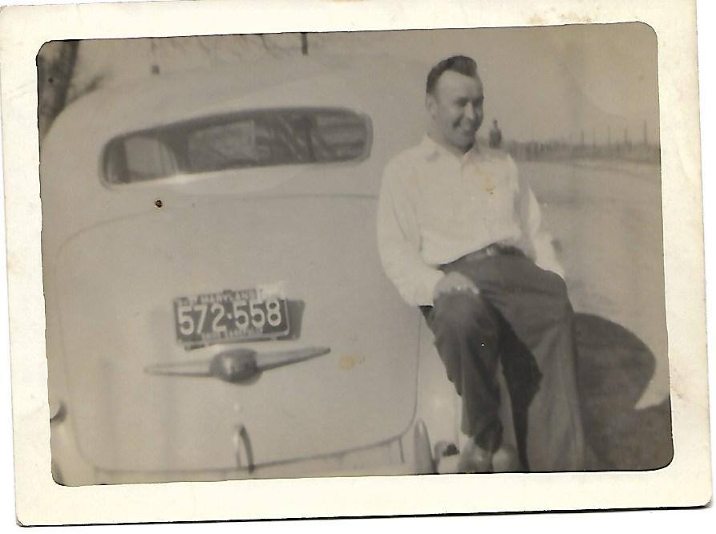
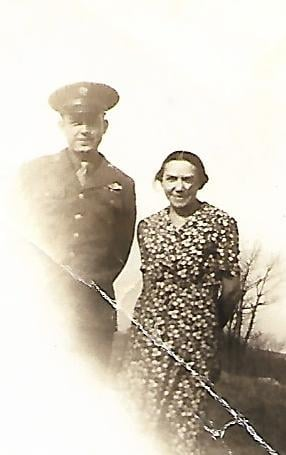
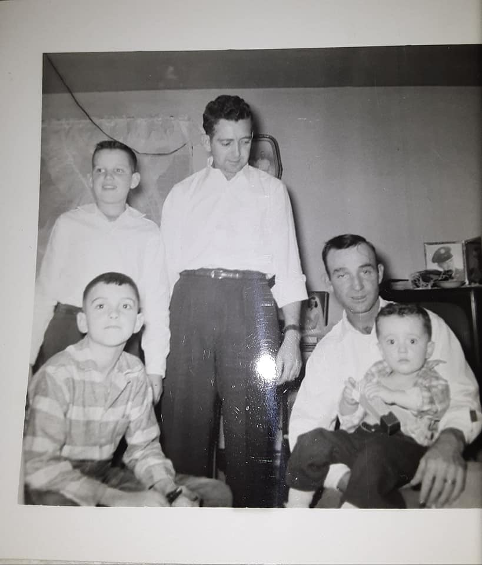

1 / 8

Group of Family from the 50's
2 / 8

My Uncle Roy
3 / 8

My Aunt Hazel
4 / 8

My Grandma Nora Heath
5 / 8
Group of kids in 1940's
6 / 8

My Grandpa, Scott Heath
7 / 8

Picture taken in late 50's
8 / 8

My Aunt, Elizabeth Heath
Ernest Heath plays No Place like Home on autoharp
As you view old pictures of the family, click below to listen to autoharp. This recording was made in the 70's at Ernest's home.